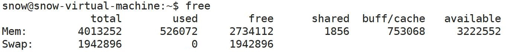

相关shell指令
ps
ps -elf
xxxxxxxxxx151F (标志): 显示进程的标志，这些标志是内核用于处理进程的不同属性的。2S (状态): 显示进程的状态。常见状态包括 R/运行中, S/睡眠中, D/不可中断的睡眠状态, Z/僵尸进程, T/停止或被跟踪, I/空闲进程(不活跃进程: I约等于Z).3UID (用户ID): 显示启动进程的用户的用户ID。4PID (进程ID): 显示进程的ID。5PPID (父进程ID): 显示创建当前进程的父进程的ID。6C (CPU使用率): 显示进程占用的CPU使用率的近似值。7PRI (优先级): 显示进程的优先级。8NI (nice值): 显示进程的nice值，这是一个影响进程调度优先级的值。9ADDR (地址): 显示进程的内存地址。10SZ (大小): 显示进程使用的内存大小。11WCHAN (等待通道): 如果进程是睡眠的，这里显示进程等待的资源。12STIME (开始时间): 显示进程开始的时间。13TTY (终端): 显示进程绑定的终端设备。14TIME (CPU时间): 显示进程使用的CPU时间总计。15CMD (命令): 显示启动进程的命令名或命令行。ps -aux

xxxxxxxxxx111USER: 进程的所有者2PID: 进程ID3%CPU: 进程占用的CPU百分比4%MEM: 进程占用的内存百分比5VSZ: 进程使用的虚拟内存量（KB）6RSS: 进程占用的固定内存量（KB）（常驻集大小）7TTY: 进程的终端类型8STAT: 进程的状态 (附加值Eg: <高优先级进程 s进程是会话领导 l多线程 +位于后台的进程组...)9START: 进程的启动时间10TIME: 进程占用CPU的时间11COMMAND: 启动进程的命令free

xxxxxxxxxx121Men内存: 2// Total: 显示系统的总内存。3// Used: 显示已使用的内存量。4// Free: 显示未使用的内存量。5// Shared: 临时文件存储系统使用的内存。6// Buff/Cache: 用作缓存的内存量。(用于缓存文件系统的数据，以便加快数据访问速度)7// Available: 对于系统还能使用多少内存的一个粗略估计(在基本不影响现有运行应用程序的情况下)。8
9Swap交换空间内存:(注意交换空间主要用于存储因为内存不足/不活跃等, 而被暂时移出物理内存的数据; 而不是用于直接从磁盘加载新的数据, 磁盘加载新的数据一般直接加载到内存中)10// Total: 总的交换空间大小。11// Used: 已使用的交换空间大小。12// Free: 未使用的交换空间大小。top

xxxxxxxxxx321// top: 系统情况2当前时间、系统运行时间、当前登录用户数、 系统负载/loadaverage(过去1分钟、5分钟和15分钟的平均值)3(一般对于单个cpu来说，负载在0～1.00之间是正常的，超过1.00 须引起注意。在多核cpu中，系统平均负载不应该高于cpu核心的总数)4
5// Tasks: 任务情况6 显示系统中的进程总数、运行进程数、睡眠进程数、停止的进程数、僵尸进程数。7
8// %CPU: CPU使用情况9us (user): 用户态运行占用的CPU百分比。10sy (system): 内核态运行占用的CPU百分比。11ni (nice): 改变优先级的进程占用的CPU百分比。12id (idle): 空闲的CPU百分比。13wa (iowait): 等待输入/输出完成的时间百分比。14hi (hardware irq): 硬件中断的时间百分比。15si (software irq): 软件中断的时间百分比。16st (steal time): 虚拟环境中其他操作系统占用的时间百分比。17
18// 第四行.第五行: 等价于free命令 19
20// 进程列表部分：21PID: 进程的唯一标识号。22USER: 运行进程的用户。23PR: 进程的优先级。24NI: 进程的nice值，这是一个影响进程调度优先级的值。25VIRT: 进程使用的虚拟内存总量，包括所有的可执行文件、数据和库。26RES: 进程使用的、未被换出的物理内存大小。27SHR: 共享内存的大小，这部分内存可能被多个进程共享。28S: 进程的状态。29%CPU: 一个动态更新频率时间段内, 进程占用的CPU时间百分比。30%MEM: 进程使用的物理内存百分比。31TIME+: 进程自启动以来占用的总CPU时间。32COMMAND: 启动进程的命令名称或命令行。kill
xxxxxxxxxx51# 显示所有信号2$kill -l3
4# 以异常方式终止进程5$kill -9 pidxxxxxxxxxx31#它会输出一个整形数字，表示它的任务编号2$vim ./01_test &3#加上&符号可以用来直接运行后台进程进程操作
创建进程
system
xxxxxxxxxx21int system(const char *command);xxxxxxxxxx41int main(void) {2 system(" ./01_while "); // 执行./01_while程序,也就是启动了一个进程3 return 0;4}fork
xxxxxxxxxx51// create a child process4pid_t fork(void);5// 返回值: 0代表子进程, 正值代表子进程的PID, 负值表示fork调用失败xxxxxxxxxx101int main() {2 pid_t pid = fork();3 if (pid == 0) { // 0代表子进程4 printf("i am child; pid = %d \n", getpid());5 } else { // 非0代表父进程, 并且这个非零值代表子进程的PID6 printf("i am mian; pid = %d, child pid = %d \n", getpid(), pid);7 sleep(1);8 }9 return 0;10}
exec函数族
xxxxxxxxxx101int execl(const char *path, const char *arg0, ... /*, (char *)0 */);2int execv(const char *path, char *const argv[]);3...4
5// path参数表示可执行文件路径6// file参数表示可执行文件名字（file只能在PATH环境变量指定的目录下查找文件）7// 函数名当中的l表示列表list的含义，它要求传入可变数量的参数，并且每个参数对应一个命令行参数，最后以0结尾8// 函数名当中的v表示向量vector的含义，它要求传入一个指针数组，数组中的每个元素指向同一个字符串的不同位置9
10// 如果执行成功，它不会返回到原来的程序，因为原程序的执行内容已被新程序替换。如果有返回值意味着出现了错误，将返回-1，xxxxxxxxxx71int main(int argc, char *argv[]) {2 // posix库函数,用于将string -> int3 int num1 = atoi(argv[1]);4 int num2 = atoi(argv[2]);5 printf("sum : %d \n", num1 + num2);6 return 0;7}xxxxxxxxxx101int main() {2 if (fork() == 0) {3 execl("/home/snow/code/test/11_process/05_test", "./05_test", "1", "2", (char *)0);4 // execl("./05_test", "./05_test", "1", "2", (char *)0);5 // execl("05_test", "./05_test", "1", "2", (char *)0);6 } else {7 printf("main process \n");8 }9 return 0;10}xxxxxxxxxx111int main() {2 if (fork() == 0) {3 char *args[] = {"./05_test", "2", "3", (char *)0};4 execv("/home/snow/code/test/11_process/05_test", args);5 // execv("./05_test", args);6 // execv("05_test", args);7 } else {8 printf("main process \n");9 }10 return 0;11}退出进程
exit族函数
xxxxxxxxxx61void exit(int status);3void _Exit(int status); 5void _exit(int status;abort
xxxxxxxxxx21void abort(void);进程控制
wait
xxxxxxxxxx61// man 2 wait2// wait for process to change state5pid_t wait(int *wstatus);6// 返回值, 成功返回子进程的ID, 失败返回-1| 宏 | 说明 |
|---|---|
| WIFEXITED(wstatus) | 子进程正常退出的时候返回真，此时可以使用WEXITSTATUS(wstatus)，获取子进程的返回情况 |
| WIFSIGNALED(wstatus) | 子进程异常退出的时候返回真，此时可以使用 WTERMSIG(wstatus)获取信号编号，可以使用 WCOREDUMP(wstatus)获取是否产生core文件 |
| WIFSTOPPED(wstatus) | 子进程暂停的时候返回真，此时可以使用WSTOPSIG(wstatus)获取信号编号 |
| ... |
xxxxxxxxxx171int main() {2 if (fork() == 0) {3 printf("child process \n");4 sleep(20);5 return 100;6 } else {7 int status;8 int s_pid = wait(&status);9 printf("wait child: child pid=%d \n", s_pid);10 if (WIFEXITED(status)) { // 子进程正常退出11 printf("child status: %d \n", WEXITSTATUS(status));12 } else if (WIFSIGNALED(status)) { // 子进程信号退出13 printf("child signed: %d \n", WTERMSIG(status));14 }15 }16 return 0;17}waitpid
xxxxxxxxxx101// wait for process to change state4pid_t waitpid(5 pid_t pid, // 指定等待的PID的子进程6 int *wstatus, // 存储进程的退出状态7 int options // 修改 waitpid 的行为的选项, 默认08);9// 返回值: 返回值, 成功返回子进程的ID, 失败返回-1。10// 返回值: 如果在options参数上使用WNOHANG选项，且没有子进程退出：返回0| PID数值 | 效果 |
|---|---|
| pid > 0 | 等待进程ID等于pid的子进程 |
| pid = 0 | 等待与调用进程同一进程组的任何子进程 |
| pid = -1 | 等待任何子进程 |
| pid < -1 | 等待进程组ID等于pid绝对值的任何子进程 |
options参数:
waitpid是阻塞函数，如果给waitpid 的options参数设置一个名为WNOHANG的宏，则系统调用会变成非阻塞模式。
如果默认阻塞: 填0。
xxxxxxxxxx221int main() {2 if (fork() == 0) {3 printf("child process \n");4 sleep(20);5 return 100;6 } else {7 int status;8 // int s_pid = waitpid(-1, &status, WNOHANG);9 int s_pid = waitpid(-1, &status, 0);10 if (s_pid == 0) {11 printf("no child process end \n");12 } else {13 printf("wait child: child pid=%d \n", s_pid);14 if (WIFEXITED(status)) {15 printf("child status: %d \n", WEXITSTATUS(status));16 } else if (WIFSIGNALED(status)) {17 printf("child signed: %d \n", WTERMSIG(status));18 }19 }20 }21 return 0;22}守护进程
进程组
getpgrp()函数获得进程组ID。
xxxxxxxxxx41int main(int argc, char *argv[]) {2 printf("test pid: %d; group id: %d \n", getpid(), getpgrp());3 return 0;4}xxxxxxxxxx111int main() {2 if (fork() == 0) {3 sleep(1);4 printf("child pid: %d; child group id: %d \n", getpid(), getpgrp());5 execl("00_test", "./00_test", (char *)0);6 } else {7 printf("main pid: %d; group id: %d \n", getpid(), getpgrp());8 printf("main proceess over \n");9 }10 return 0;11}setpgid(pid, pgid)函数, 允许一个进程改变自己或其他进程的进程组。
xxxxxxxxxx81// set process group4int setpgid(5 pid_t pid, // 要改变进程组的目标进程, 如果0,表示当前进程6 pid_t pgid // 新的进程组ID, 如果0,表示当前进程PID作为进程组ID7);8// 成功返回0, 失败返回-1xxxxxxxxxx101int main(int argc, char *argv[]) {2 if (fork() == 0) {3 printf("child pid: %d; group id: %d \n", getpid(), getpgrp());4 setpgid(0, 0);5 printf("child pid: %d; group id: %d \n", getpid(), getpgrp());6 } else {7 printf("main pid: %d; group id: %d \n", getpid(), getpgrp());8 }9 return 0;10}会话
每个会话都有会话ID, 基本上会话ID都是最初创建会话的进程的PID。(man setsid)(man getsid)
可以使用getsid函数可以获取进程的会话ID。
一个进程可以使用系统调用setsid新建一个会话。该进程成为新会话的第一个进程/会话领导。
注意: 用来调用setsid创建会话的进程, 不能是进程组组长。
创建新会话以后，即使原来的shell被关闭了，子进程创建的新会话依然不受影响/不会关闭。
xxxxxxxxxx71// get session ID4pid_t getsid(5 pid_t pid // 要查询会话ID的进程pid, 0代表当前进程6);7// 返回值: 成功返回会话ID, 失败-1xxxxxxxxxx51// creates a session and sets the process group ID4pid_t setsid(void);5// 返回值: 成功返回新会话的ID, 失败-1xxxxxxxxxx141int main(int argc, char *argv[]) {2 if (fork() == 0) {3 printf("child session id: %d \n", getsid(0));4 int res = setsid();5 ERROR_CHECK(res, -1, "setsid");6 printf("new session id: %d \n", getsid(0));7 while (1) {8 sleep(1);9 }10 } else {11 printf("main session id: %d \n", getsid(0));12 }13 return 0;14}创建守护进程
守护进程的创建流程
父进程创建子进程，然后让父进程终止。
在子进程当中创建新会话。
修改当前工作目录为根目录。(因为如果使用当前目录, 意味着当前目录活跃, 则当前目录无法在文件系统中卸载; 而根目录所在的文件系统正常来讲是一直挂载的)
重设文件权限掩码为0，避免创建文件的权限受限。
关闭不需要的文件描述符，比如0、1、2。
xxxxxxxxxx141int main(int argc, char *argv[]) {2 if (fork() == 0) {3 setsid();4 chdir("/");5 umask(0);6 for (int i = 0; i < 1024; i++) {7 close(i);8 }9 while (1) {10 sleep(1);11 }12 }13 return 0;14}日志
使用守护进程经常可以用记录日志, syslog函数 在Linux中可以用于发送消息到系统日志。(操作系统的日志文件存储在/var/log/...中) (man 3 syslog)
xxxxxxxxxx71// send messages to the system logger3void syslog(4 int priority, // 日志级别的组合值: LOG_ERR、LOG_WARNING、LOG_INFO、LOG_DEBUG 等5 const char *format, // 格式字符串6 ... // 格式字符串对应的变量参数列表7);xxxxxxxxxx291int main(int argc, char *argv[]) {2 int flag = 0;3 if (fork() == 0) {4 setsid();5 chdir("/");6 umask(0);7 for (int i = 0; i < 64; i++) {8 close(i);9 }10 while (1) {11 sleep(1);12 // 获取当前时间13 time_t now = time(NULL);14 // 讲time_t转化为tm15 struct tm *local = localtime(&now);16 // 获得时间17 int year = local->tm_year + 1900;18 int month = local->tm_mon + 1;19 int day = local->tm_mday;20 int hour = local->tm_hour;21 int min = local->tm_min;22 int second = local->tm_sec;23 // 日志打印24 if (flag == 0)25 syslog(LOG_INFO, "%d-%02d-%02d %02d:%02d:%02d \n", year, month, day, hour, min, second);26 }27 }28 return 0;29}进程间通信
管道
有名管道
xxxxxxxxxx81// make a FIFO special file (a named pipe)4int mkfifo(5 const char *pathname, // 要创建的命名管道的路径名6 mode_t mode // 指定新管道的权限(掩码)7);8// 返回值: 成功0, 失败-1xxxxxxxxxx61// delete a name and possibly the file it refers to3int unlink(4 const char *pathname // 要删除的文件的路径名5);6// 返回值: 成功0, 失败-1xxxxxxxxxx191int main(int argc, char *argv[]) {2 mkfifo("myfifo", 0600);3 int fd = open("myfifo", O_RDWR); // 可读可写4 if (fork() == 0) {5 write(fd, "hello", 5);6 sleep(1);7 char buf[5] = {0};8 read(fd, buf, sizeof(buf));9 printf("child: %s \n", buf);10 } else {11 char buf[5] = {0};12 read(fd, buf, sizeof(buf));13 printf("main: %s \n", buf);14 sleep(1);15 write(fd, "ok", 2);16 }17 unlink("myfifo");18 return 0;19}匿名管道
xxxxxxxxxx61// create pipe3int pipe(4 int pipefd[2] // 包含两个文件描述符的整型数组。pipefd[0]读取端文件描述符，pipefd[1]写端文件描述符。5);6// 返回值: 成功0, 失败-1xxxxxxxxxx151int main(int argc, char *argv[]) {2 int pipefd[2];3 pipe(pipefd);4 if (fork() == 0) {5 close(pipefd[1]); // 只保留读6 char buf[5];7 read(pipefd[0], buf, 5);8 printf("child get message: %s \n", buf);9 } else {10 close(pipefd[0]); // 只保留写11 write(pipefd[1], "hello", 5);12 wait(NULL);13 }14 return 0;15}共享内存
System V
ftok
ftok函数的作用是根据条件产生一个独特的、用于标识作用的键值，使得在System V共享内存机制中,不同的进程可以通过同一键值访问到同一片共享内存，从而实现进程间通信。(man 2 ftok)
xxxxxxxxxx81// convert a pathname and a project identifier to a System V IPC key4key_t ftok(5 const char *pathname, // 实际存在且可访问的文件的路径(文件本身内容并不重要, 只是标识作用)6 int proj_id // 进一步确保生成的键值的唯一性(也是标识作用), 1-255(不能是0)7);8// 返回值: 成功则返回产生键值, 失败返回-1创建共享内存
使用shmget函数可以根据键来获取一个共享内存段。
函数的键值key通常由ftok函数生成。
如果参数key设置为IPC_PRIVATE的宏，函数总会创建一个新的共享内存段，且只有创建这个共享内存的进程，及其具有亲缘关系的进程(子进程)可以访问。 (设置IPC_PRIVATE创建的共享内存又被称为私有内存)
建议size为内存页大小的整数倍。
shmflg参数, 可以设置共享内存的读写权限。 (Eg: 0600 ...)
shmflg参数, 还可以配合逻辑标准使用。( IPC_CREAT、IPC_EXCL)
xxxxxxxxxx191// allocates a System V shared memory segment4int shmget(5 key_t key, // 共享内存段的键值, 用于标识共享内存段6 size_t size, // 指定共享内存段的大小(单位:字节)7 int shmflg // 位掩码，用于设置共享内存段的权限和状态8);9// 返回值: 10// 情况一: 如果shmflg, 既没有设置IPC_CREAT, 也没有设置IPC_EXCL, 只有文件权限11 如果指定的共享内存(key来确定)已经存在：返回已存在的共享内存段的标识符12 如果指定的共享内存(key来确定)不存在： 将失败，并返回 -113// 情况二: 如果shmflg, 设置了文件权限之后, 也设置了IPC_CREAT14 如果指定的共享内存(key来确定)已经存在：返回已存在的共享内存段的标识符15 如果指定的共享内存(key来确定)不存在: 会创建一个新的共享内存段，并返回该共享内存标识符16// 情况三: 如果shmflg, 设置了文件权限之后, 也设置了IPC_CREAT, 也设置了IPC_EXCL17 如果指定的共享内存(key来确定)已经存在：会失败返回-1，errno被设置为 EEXIST18 如果指定的共享内存(key来确定)不存在: 会创建一个新的共享内存段，并返回该共享内存标识符19ps: IPC_EXCL标志单独使用无意义(等同第一种情况), IPC_EXCL标志只有在与IPC_CREAT一起使用时才有意义。xxxxxxxxxx81int main(int argc, char *argv[]) {2 key_t keytag = ftok("./Makefile", 1); // 获得key标记3 printf("key_t: %d \n", keytag);4 int shmid = shmget(keytag, 100, 0600 | IPC_CREAT); // 产生共享内存5 ERROR_CHECK(shmid, -1, "shmget");6 printf("shmid: %d \n", shmid);7 return 0;8}xxxxxxxxxx91$ipcs2# key shmid owner perms bytes nattch status 3# 键 描述符 拥有者 权限 占据空间 连接数 状态4
5$ipcs -l6# 查看各个IPC的限制7
8$ipcrm -m shmid9# 手动删除获取共享内存
shmat函数用于将共享内存段映射到当前进程的地址空间，允许进程访问共享内存段中的数据。(man 2 shmat)
xxxxxxxxxx91// memory operations4void *shmat(5 int shmid, // 共享内存标识符，由 shmget 返回。6 const void *shmaddr, // 指定共享内存连接到进程地址空间的具体地址。建议NULL自动选择7 int shmflg // 标识权限。意义不大填0即可8);9// 返回值: 成功, 返回共享内存段在进程地址空间中的起始地址, 这个地址是进程用于访问共享内存的指针。失败-1共享内存通信
xxxxxxxxxx61int main(int argc, char *argv[]) {2 int shmid = shmget(1000, 4096, 0600 | IPC_CREAT); // 简单指定key: 10003 char *p = (char *)shmat(shmid, NULL, 0);4 strcpy(p, "hello123");5 return 0;6}xxxxxxxxxx61int main(int argc, char *argv[]) {2 int shmid = shmget(1000, 4096, 0600 | IPC_CREAT); // 简单指定key: 10003 char *p = (char *)shmat(shmid, NULL, 0);4 printf("read: %s \n", p);5 return 0;6}解除共享内存映射
使用shmdt函数可以断开当前进程与共享内存段的连接，解除到共享内存段的映射(某种程度上等价于free)。
当一个进程通过shmat函数将共享内存段附加到自己的地址空间后，使用 shmdt函数将其分离。(man 2 shmdt)
xxxxxxxxxx71// shared memory operations4int shmdt(5 const void *shmaddr // 指向共享内存段的起始地址(shmat返回值)6);7// 返回值: 成功0, 失败-1xxxxxxxxxx101int main(int argc, char *argv[]) {2 int shmid = shmget(1000, 4096, 0600 | IPC_CREAT);3 char *p = (char *)shmat(shmid, NULL, 0);4 strcpy(p, "hello123");5 shmdt(p);6 while (1) {7 strcpy(p, "456");8 }9 return 0;10}信号
概念
在操作系统中, 信号用于通知进程----发生了某些事情。信号是一种进程间通信机制。
xxxxxxxxxx31查看信号列表2// 我们可以通过 "kill -l" 命令, 查看Linux系统中的信号列表。3// 或者通过"man 7 signal"在man手册中查看信号列表及作用解释。| Signal | Value | Action | Comment |
|---|---|---|---|
| SIGHUP | 1 | Term | 链接断开 |
| SIGINT | 2 | Term | 键盘中断(Ctrl+C触发) (默认行为:终止进程) |
| SIGQUIT | 3 | Core | 键盘退出(Ctrl+\触发) (默认行为:终止进程) |
| SIGILL | 4 | Core | CPU指令译码阶段无法识别 |
| SIGABRT | 6 | Core | 异常终止 |
| SIGFPE | 8 | Core | 浮点异常 |
| SIGKILL | 9 | Term | 终止进程 |
| SIGSEGV | 11 | Core | 异常内存访问 |
| SIGPIPE | 13 | Term | 写入无读端的管道 |
| SIGALRM | 14 | Term | 定时器超时 |
| SIGTERM | 15 | Term | 终止 |
| SIGUSR1 | 30, 10, 16 | Term | 自定义信号1 |
| SIGUSR2 | 31, 12, 17 | Term | 自定义信号2 |
| SIGCHLD | 20, 17, 18 | Ign | 子进程终止或者暂停 |
| SIGCONT | 19, 18, 25 | Cont | 暂停后恢复运行 |
| SIGSTOP | 17, 19, 23 | Stop | 暂停进程(可通过Ctrl+Z触发)(SIGCONT或者fg恢复) |
| SIGTSTP | 18, 20, 24 | Stop | 终端输入的暂停 |
| SIGTTIN | 21, 22, 26 | Stop | 后台进程控制终端读 |
| SIGTTOU | 22, 22, 27 | Stop | 后台进程控制终端写 |
xxxxxxxxxx221常见的信号: 2SIGINT信号3// 可通过: 键盘 "ctrl+c" 触发4// 可以通过: "kill -2 pid" 命令触发5SIGQUIT信号6// 可通过: 键盘 "ctrl+\" 触发7// 可以通过: "kill -3 pid" 命令触发8// 和SIGINT信号的区别是, 会产生核心转储文件/core dumped 9// 如果ulimit设置中core file size为0, 则不会产生转储文件 (ulimit -a)10SIGKILL信号11// 可以通过: "kill -9 pid" 命令触发 12// 注意: SIGKILL信号的默认行为不可更改(SIGKILL信号不能被进程捕获、忽略或阻塞)13SIGSTOP信号14// 可通过: 键盘 "ctrl+Z" 触发15// 可以通过: "kill -19 pid" 命令触发16// 信号的默认行为：暂停进程17// 注意: SIGSTOP信号的默认行为不可更改18// 可以通过SIGCONT信号把暂停的进程继续运行19// 也可以通过fg恢复SIGSTOP信号暂停的进程20SIGCONT信号21// 可以通过: "kill -18 pid" 命令触发22// 信号的默认行为：恢复暂停的进程函数
signal
进程对信号有三种处理方式。
如果未进行任何设置和操作，信号具有预设的处理机制, 将按照预设的处理机制执行。(操作系统控制/预设的)
也可以选择设置忽略一个信号。(signal(信号, SIG_IGN)) (并不是每一个信号都是可以被忽略的)
设置信号为其默认行为SIG_DFL (signal(信号, SIG_DFL))
xxxxxxxxxx121int main(int argc, char *argv[]) {2 // 给2号信号设置忽略3 // signal(2, SIG_IGN);4 signal(SIGINT, SIG_IGN);5 printf("2号信号已经忽略\n");6 sleep(10);7 printf("2号信号已经默认\n");8 // 给2号信号恢复默认行为9 signal(2, SIG_DFL);10 sleep(10);11 return 0;12}xxxxxxxxxx81// 定义信号处理函数的类型: int类型的参数(信号编号), void返回值3typedef void (*sighandler_t)(int);4sighandler_t signal(5 int signum, // 要处理的信号编号(Eg:SIGINT、SIGTERM...)(Eg:2,15...)6 sighandler_t handler // 指向信号处理函数(回调机制): 如上面sighandler_t定义, (另外:SIG_IGN表示忽略信号; SIG_DFL表示恢复信号的默认行为)7);8// 返回值: 成功返回关联的指定信号的处理函数的指针; 失败返回SIG_ERRxxxxxxxxxx101void func(int sig_value) {2 printf("sig_value: %d \n", sig_value);3 // exit(0);4}5int main(int argc, char *argv[]) {6 signal(2, func);7 // signal(SIGINT, func);8 while (1);9 return 0;10}kill
xxxxxxxxxx81// send signal to a process4int kill(5 pid_t pid, // 表示进程ID (另外 0:发送信号到与发送进程相同进程组的所有进程; -1:表示所有可以发送信号的进程发送信号; 小于-1:则根据其绝对值去关闭其作为组长的进程组)6 int sig // 信号数值7);8// 返回值: 成功0, 失败-1xxxxxxxxxx51int main(int argc, char *argv[]) {2 // kill(getpid(), 3);3 kill(getpid(), SIGQUIT);4 return 0;5}alarm
xxxxxxxxxx31// set an alarm clock for delivery of a signal3unsigned int alarm(unsigned int seconds);xxxxxxxxxx131void func(int sig_value) {2 printf("sig_value: %d \n", sig_value);3}4int main(int argc, char *argv[]) {5 // signal(SIGALRM, func);6 alarm(4);7 while (1) {8 sleep(1);9 printf("-- \n");10 }11 return 0;12}13// ps: 注意的是每个进程只有一个闹钟时间，所以重复使用alarm会更新为新设置的超时时间，并且返回值会是原来闹钟时间的剩余秒数。setitimer
xxxxxxxxxx151// get value of an interval timer3int getitimer(4 int which, // 定时器的类型5 struct itimerval *curr_value //6);7struct itimerval {8 struct timeval it_interval; // 间隔时间: 字段被设置为非零值，定时器将变为周期性的9 struct timeval it_value; // 定时器的剩余时间10 // 当定时器的it_value达到0并触发信号后，it_value会被重新设置为 it_interval 的值，然后定时器再次开始计时11};12struct timeval {13 long tv_sec; /* seconds */14 long tv_usec; /* microseconds */15};xxxxxxxxxx81// set value of an interval timer3int setitimer(4 int which, // 定时器的类型5 const struct itimerval *new_value, // 指定的新的定时器值6 struct itimerval *old_value // 存储定时器的前一个值7);8// 返回值: 成功0, 失败-1which参数：指定定时器的类型。常用的类型包括：
ITIMER_REAL：按照真实时间,当时间到达,发出一个SIGALRM信号。ITIMER_VIRTUAL：按照用户态代码执行时间计算,当时间到达,发出一个SIGVTALRM信号。ITIMER_PROF：按照用户态用户态和内核态代码执行时间计算,当时间到达,发出一个SIGPROF信号。
xxxxxxxxxx231void func(int sig_value) {2 printf("sig_value: %d \n", sig_value);3}4int main(int argc, char *argv[]) {5 signal(SIGALRM, func);6 struct itimerval timer;7 memset(&timer, 0, sizeof(timer));8 timer.it_value.tv_sec = 10;9 timer.it_value.tv_usec = 0;10 timer.it_interval.tv_sec = 2;11 timer.it_interval.tv_usec = 0;12 setitimer(ITIMER_REAL, &timer, NULL);13 while (1) {14 sleep(1);15 struct itimerval get_time;16 memset(&get_time, 0, sizeof(get_time));17 getitimer(ITIMER_REAL, &get_time);18 printf("this time remainder. sec: %ld; usec: %ld \n",19 get_time.it_value.tv_sec,20 get_time.it_value.tv_usec);21 }22 return 0;23}